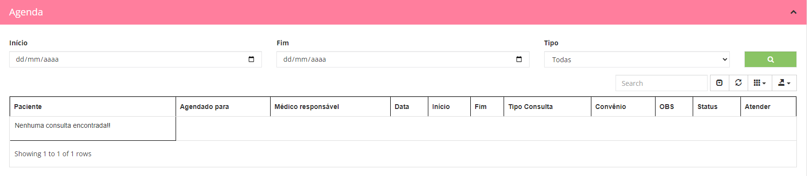

Menu Agenda

No home o primeiro tópico ue aparece para os médicos e o acesso a uma agenda rápida fazendo consultas selecionando o início , fim e o tipo de consulta ,
mostrando todas as consultas pesquisadas
Tratamentos

Após a agenda rápida temos a area de tratamento , onde irá listar todos os pacientes que estão em tratamentos , podendo fazer pesquisar rápidas .
Todos os pacientes teram a coluna Acompanhar , que possuí 3 botões :
-
Visualizar prontuário : local onde o médico irá colocar todas as informações sobre a paciente , lançar todos os dados e fazer o acompanhamento do tratamento .
-
Visualizar laboratório : local onde o laboratório quem lança as informações e o médico pode fazer a visualização do laboratório e fazer observações médicas.
-
Lançar beta-hcg : local onde o médico e o laboratório pode fazer o lançamento dos betas , mostrando os resultados .